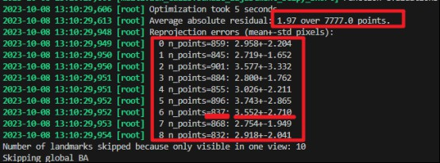

代码流程
绕动小球
制作直径为1.5 cm的金属靶球，通过一根短杆悬吊。实验开始前，先在地面上放置一个棋盘位于记录环境的中心，用于对齐坐标系。初始时，将靶球放置远离棋盘，避免遮挡。然后，开启记录，将小球绕大鼠活动空间内遍历2分钟。使用OBS Studio软件采集多视角视频，小球运动轨迹需覆盖需要矫正的空间位置。
重要警告
球的直径会影响标定精度，建议使用直径为1.5 cm的金属靶球。球的运动速度不要太快，否则产生运动模糊，影响标定精度。
代码执行
#!/bin/bash
conda activate mmdet
vfile='/PATH_to_ball/BALL____2024-01-22_14-34-01.mp4'
LILAB_DIR=/home/liying_lab/chenxf/ml-project/LILAB-py/lilab
bash $LILAB_DIR/multiview_scripts_dev/p_calibration.sh $vfile carl
其中 vfile 是 OBS Studio 软件录制的视频文件路径，carl 是相机标定参数。脚本会自动解析视频，并生成标定结果。
常用的相机标定参数包括：
- ana: 大鼠行为间1，相机#A1-#A9
- bob: 大鼠行为间2，相机#B1-#B9，拍摄小桶
- carl: 大鼠行为间2，相机#B10-#B18，拍摄中&大桶
重要警告
请检查正确的相机标定参数，这些标定参数存储了预先"标定的内参"。每套多相机系统的内参有较大区别，请勿混淆，否则会导致标定结果不准确。
📊 标定结果展示
在生成的 *ball_keypoint.mp4 中查看绿色预测点与小球的吻合程度。生成的 *.calibpkl 是多相机模型文件，用于后续的3D重建。

📐 标定的精度评价
查看代码运行的输出。其中 Reprojection errors 是重投影误差，表示预测点与实际点之间的距离。误差越小，标定精度越高。通常允许在 4.0±2.0 像素内。

错误
运行p_calibration.sh时输出error pixel过大，或输出结果视频（*ball_keypoint.mp4）中绿点无法正确跟随小球，说明校正不精确。这往往是 2D 识别小球有很大偏差。需要重新打标，见数据集制作&模型更新章节。